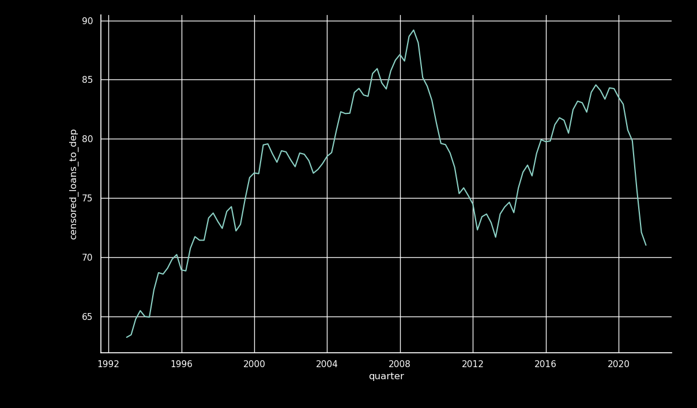

A Look at Loan-to-Deposits
Table of Contents
I use:
"Net loans and leases to deposits","lnlsdepr","Loans and lease financing receivables net of unearned income, allowances and reserves as a percent of total deposits."
as the measure of loans and leases to deposits.

Figure 1: Median Loans to Deposits by Quarter

Figure 2: Mean Loans to Deposits by Quarter
1. Low Loan to Deposit Banks
Let's look at the banks with low LTD in 2012 and in 06302021. Are they the same?
Kansas City 1458 Dallas 1437 Chicago 1107 Atlanta 754 New York 620 San Francisco 495 Name: fdicdbs, dtype: int64
Kansas City 1068 Dallas 940 Chicago 817 Atlanta 493 San Francisco 333 New York 314 Name: fdicdbs, dtype: int64
The only difference is in the order of NY and San Francisco.
1.1. What about MDI Status?
1.1.1. Low LTD
A 0.349315 B 0.287671 H 0.226027 N 0.123288 M 0.013699 Name: Minority Status_(Alpha_Code), dtype: float64
Proportion MDI vs non-MDI
0.9751320047692046
B 0.329412 H 0.329412 N 0.200000 A 0.129412 M 0.011765 Name: Minority Status_(Alpha_Code), dtype: float64
0.978562421185372
1.1.2. High LTD
A 0.565445 H 0.193717 B 0.151832 N 0.083770 M 0.005236 Name: Minority Status_(Alpha_Code), dtype: float64
A 0.653179 H 0.173410 N 0.098266 B 0.075145 Name: Minority Status_(Alpha_Code), dtype: float64
2. Cross-sectional Regression
We'll use R so we can estimate robust standard errors.